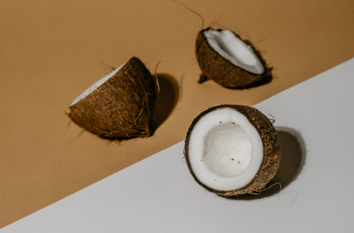

SUCCESS STORIES
Fortuna Cools: Turning Coconut Husks into Sustainable Insulation
Based in the Philippines, Fortuna Cools is on a mission to replace plastic foam with natural fibers. Co-founder and CEO David Cutler and his team have developed the Nutshell Cooler, an insulated product made from coconut husks, a byproduct of the coconut oil industry. These husks, originally evolved to protect coconut meat from the sun, are often burned as waste. Fortuna Cools sources them from small-scale farming families, providing them with a new source of income. The Nutshell Cooler and other products from Fortuna Cools are insulated with biodegradable coconut fiber, which can eventually break down into useful mulch or compost. This initiative not only reduces plastic waste but also supports local farmers and rural communities. Fortuna Cools envisions becoming the new standard for insulation in outdoor gear and packaging.